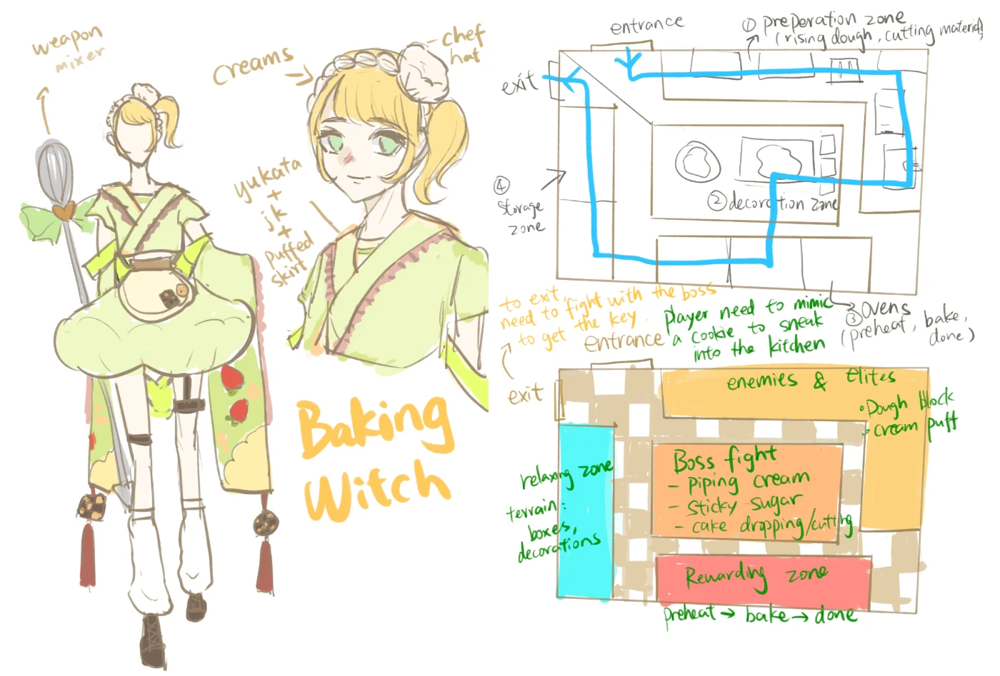

[ P-02 ] Featured work · Client project
Generate/
Deeplight
Concept design and 2D art for a client-commissioned 3D action roguelike: characters and the maps they belong to, combat UI, and tarot card design.
- Role
- Concept Artist & 2D Designer
- Context
- Deeplight Games, Generate @ Northeastern University
- Period
- 2026 – Present
- Status
- In development
01
Overview
The project is a 3D action roguelike commissioned by a client and built by a multidisciplinary team. I work on how it looks, and on keeping the way it looks tied to how it plays.
The work below is my own concept and design work for the project: a combat health bar, a tarot card design, and three character-and-map concepts.
02
Combat UI Design
A compact health bar meant to stay readable in combat while matching the game's style: a clear status bar in a thin gold frame, anchored by a crystal emblem.

03
Tarot Card Design
A visual language for the game's card-based elements: a gold frame with crescent moons and stars around a compass-star panel, above space for the card's text.

04
Character & Environment Concept Design
These concept designs explore the relationship between character identity and environmental storytelling. Each composition pairs a character with its corresponding map, so the two share one visual language and the game's characters and spaces read as a consistent whole.




05
My contribution
- 01Character concept design
- 02Character-related map and environment concept design
- 03Contributions to the overall visual style and art direction
- 04Combat UI design, including the health bar
- 05Tarot card artwork and visual design
- 062D game art assets
The game is built by the whole team, and its visual development is shared. The work shown here is my concept and design work for it, not necessarily final in-game assets.
06
Status
In development Client-commissioned work in development. The designs on this page are concepts, not final implemented assets.